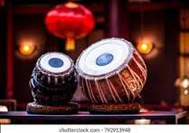

Tabla, pair of small drums fundamental (since the 18th century) to Hindustani music of northern India, Pakistan, and Bangladesh. The higher-pitched of the two drums, which is played with the right hand, is also referred to individually as the tabla or as the daya (dahina or dayan, meaning “right”). It is a single-headed drum usually of wood and having the profile of two truncated cones bulging at the centre, the lower portion shorter. It is about 25 cm (10 inches) in height and 15 cm (6 inches) across. Skin tension is maintained by thong lacings and wooden dowels that are tapped with a hammer in retuning. It is usually tuned to the tonic, or ground note, of the raga (melodic framework). Indian tabla, consisting of two drums, baya (left) and daya, in the James Blades Collection. Indian tabla, consisting of two drums, baya (left) and daya, in the James Blades Collection. The baya (bahina or bayan, meaning “left”), played with the left hand, is a deep kettledrum measuring about 25 cm (10 inches) in height, and the drum face is about 20 cm (8 inches) in diameter. It is usually made of copper but may also be made of clay or wood, with a hoop and thong lacings to maintain skin tension. Pressure from the heel of the player’s hand changes the tone colour and pitch. The tuning of the baya varies, but it may be a fifth or an octave below the daya. A disk of black tuning paste placed on the skin of each drum affects pitch and also generates overtones characteristic of the drums’ sound. The musician plays the tabla while seated, with the baya to the left of the daya. Sound is produced on the drums through a variety of different finger and hand strokes. Each drum stroke can be expressed by a corresponding syllable, used for both teaching and performance purposes. The intricate music of the drums reflects the rhythmic framework (tala) of the piece. Observe a man playing the tabla Observe a man playing the tabla The tabla, the principal rhythmic instrument in the Hindustani music tradition. See all videos for this article Tabla can be documented in India from the late 18th century. Originally associated with courtesan dance traditions, tabla now are used in a variety of genres and styles of Hindustani music. Distinguished players of the tabla include Alla Rakha Khan and his son Zakir Hussain.
As stated earlier, the tabla seems to have been in the beginning an instrument which suited the lighter variety of music and hence was very popular with the common people. It, however, remained confined to folk music and to the simple music of the lower castes, till the beginning of the eighteenth century. Around this time, with the downfall of dhrupad, a style of singing, and its allied instruments like been and rabab, pakhavaj also lost its popularity. A new style of singing, i.e. khayal, came up. For the accompaniment of khayal and its allied instruments like sitar and sarod, the need of a new percussion instrument was felt, which had the majesty of the pakhavaj yet could be played in a lighter manner as well. The tabla had the versatile tonality to serve both purposes. The tabla might have made its presence felt in Hindustani classical music around the early eighteenth century during the reign of Mohammad Shah Rangeele. Sudhar Khan was basically stationed in Delhi, and therefore his school, or style of playing was called Dilli Baj or Dilli gharana. Later on his disciples scattered in various regions of northern India, and thus with the time span, several other tabla-playing styles came into being, but the source or the parent style of all these new schools remained the Delhi school. The principal tabla schools that emerged and flourished are: Dilli, Ajrada, Lucknow, Farrukhabad, Benaras and Punjab. Gradually, with the passage of time, the tabla acquired the rhythmic patterns and techniques of other percussion instruments such as pakhavaj, dholak, naqqara, etc., and shot to the peak of popularity in a very short span of time.